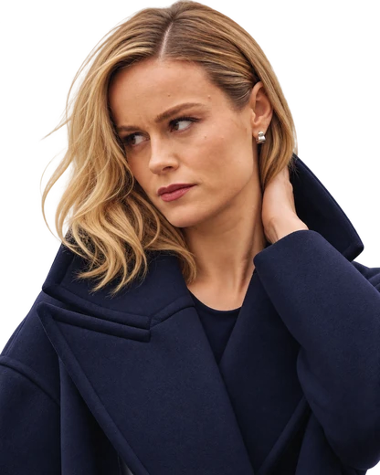

Lucy Williams
Lucy Williams é repórter investigativa da CatCo. Ela e a Letícia tiveram algo no passado, em Gotham, que terminou sem explicação. É um dos dois romances do jogo.
Rotina
Dias úteis
| Hora | Lugar |
|---|---|
| 6h | Em casa |
| 8h | Café Grão Nobre |
| 9h | CatCo Worldwide Media |
| 13h | Ricci Trattoria |
| 14h | CatCo Worldwide Media |
| 18h | Bayside Books |
| 20h | Noonan's |
| 23h | Em casa |
Fim de semana
| Hora | Lugar |
|---|---|
| 6h | Em casa |
| 9h | Parque Central |
| 12h | Bayside Books |
| 16h | Praia |
| 20h | Noonan's |
| 23h | Em casa |
Dia de chuva
| Hora | Lugar |
|---|---|
| 6h | Em casa |
| 8h | Café Grão Nobre |
| 9h | CatCo Worldwide Media |
| 20h | Noonan's |
| 23h | Em casa |
Com encontro marcado, a agenda das 19h às 22h é o encontro.
Presentes
No aniversário (4 de Primavera), o presente vale mais: amado ×5, gostou ×3 e neutro ×2.
| Reação | Itens |
|---|---|
| Ama +80 pontos | |
| Gosta +45 pontos | |
| Neutro +20 pontos | Todo o resto (coletáveis e itens comuns) |
| Não gosta −20 pontos |
Eventos de coração
| Corações | Evento | Onde e quando | O que ganha |
|---|---|---|---|
| ♥ 1 | lucy_1 | CatCo Worldwide Media, das 16h30 às 22h30 | — |
| ♥ 2 | Lucy: depois do expediente | Noonan's, das 17h15 às 23h15 | — |
| ♥ 4 | Lucy: um mistério | Bayside Books, das 15h30 às 21h30 | Presente: |
| ♥ 5 | Lucy: o arquivo da CatCo | CatCo Worldwide Media, das 15h30 às 21h30 | — |
| ♥ 6 | Lucy: o píer à noite | o píer, à noite, das 18h30 às 0h30 | — |
| ♥ 8 | Lucy: pôr do sol | CatCo Worldwide Media, das 16h45 às 22h45 | — |
| ♥ 10 | Lucy: o chafariz | chafariz do parque, à noite, das 17h30 às 23h30 | — |
Falas
“Letícia Luthor. Veio dar uma declaração oficial ou só me vigiar?”
Logo que se conhecem
“Admito: a LuthorCorp está mais transparente do que eu esperava. Não vou escrever isso. Ainda.”
Com amizade
“Eu passei anos fugindo de National City. Agora não consigo imaginar estar em outro lugar.”
Bem próximas
Mensagens no celular
Com 2 corações, ela manda mensagens de vez em quando (app Mensagens, tecla T). Responder dá amizade e carisma.
Ver as 12 mensagens e as respostas
Minha editora cortou metade da matéria. A metade boa, claro. Preciso de um café e de você.
- Te encontro no Grão Nobre em 20 minutos. → Vou estar na mesa do canto, de cara amarrada. Me reconhece fácil.
- Me manda a metade cortada. Eu quero ler. → Você vai ler tudo? Até a parte das notas fiscais? Ok, agora eu fiquei boba.
- A metade boa era sobre a Luthor Corp? → Não vou responder isso. Mas era. Um pouquinho.
Achei uma foto nossa de Gotham numa caixa. A gente era muito nova. E muito descabelada.
- Me manda! Eu quero ver. → Só se você prometer não rir do meu cabelo. Ok, pode rir. Eu ri.
- Eu lembro daquele dia. → Eu também. Engraçado como algumas coisas não saem da cabeça.
- Você estava linda. Continua. → Para com isso, Luthor. Estou na redação e fiquei vermelha.
Plantão na redação. Se eu sumir, me procura atrás de uma pilha de arquivos.
- Vou levar um café e um resgate. → Melhor resgate da história. Traz um muffin também.
- Não fica até tarde, tá? → Prometo sair antes da meia-noite. Talvez. Provavelmente.
- Qual é a pauta? → Se eu contar, deixa de ser furo. Mas não é sobre você. Desta vez.
Fui ao píer pensar numa matéria. Acabei pensando em você. A matéria vai ficar para amanhã.
- Pensou o quê? → Coisas que não cabem num lead. Te conto à noite.
- A culpa é minha, então. → Totalmente sua. Vou cobrar com um jantar.
- O píer é bom pra isso. → O píer é bom. A companhia em pensamento foi melhor.
A Nia leu meu rascunho e disse que eu escrevo como quem está apaixonada. Ofendida. Profissionalmente.
- E está? → Sem comentários. Off the record: talvez.
- A Nia é uma ótima editora. → Ótima demais. Vou parar de mostrar meus rascunhos.
- Me deixa ler também. → Só se você prometer não sorrir. Você vai sorrir.
Pedi um café no Grão Nobre e o Harry já sabia que era para duas. Fui descoberta.
- Era para duas mesmo? → Era. A outra metade está esfriando. Vem logo.
- O Harry sabe de tudo. → Ele é o melhor repórter da cidade e nem sabe.
- Estou indo. → Estou guardando o lugar com a minha jaqueta. É sério.
Bom dia (namorando)
Bom dia. Acordei pensando em você e no café do Harry. Nessa ordem? Não conta.
- Bom dia. Eu também pensei em você. → Então hoje vai ser um bom dia. Estou decidindo isso agora.
- Qual veio primeiro, eu ou o café? → Você. Mas o café ficou ofendido. Não conta pra ele.
- Te encontro no Grão Nobre? → Às 8h30. Eu pago. Não discute.
Bom dia, CEO. Hoje é dia de manchete boa, eu sinto.
- Contanto que a manchete não seja sobre mim. → Não prometo nada. Mas vou ser gentil.
- Seu instinto nunca erra. → Quase nunca. Errou uma vez. Com você, lá em Gotham.
- Bom dia, repórter. Boa caçada. → Obrigada. Volto com a história e com saudade.
Bom dia! Tenta não salvar o mundo antes do almoço, tá?
- Só um pedacinho dele. Prometo. → Um pedacinho pequeno. Depois almoça comigo.
- Vou salvar só o seu dia. → Já salvou. Era só isso que eu queria ler.
- Você também. Nada de furo antes do café. → Ok, ok. Mas se aparecer um furo, eu corro.
Bom dia. Sonhei que a gente dividia uma manchete. Acordei querendo isso de verdade.
- Bom dia. A gente divide, então. → Com o seu nome primeiro. Desta vez eu deixo.
- Que manchete era? → Segredo. Mas tinha a palavra 'juntas'.
- Volta a dormir e me conta o final. → Não dá, a redação me espera. Te conto no almoço.
Bom dia! Está frio na redação e eu estou com o seu casaco. Não vou devolver.
- Pode ficar com ele. → Já estava ficando. Mas obrigada pela permissão.
- Ele fica melhor em você. → Tudo seu fica melhor em mim. Brincadeira. Um pouco.
- Então eu fico com a sua jaqueta. → Combinado. Troca justa.
Bom dia, Luthor. Hoje eu vou ser gentil com as fontes e brava com a editora. Me deseja sorte.
- Boa sorte, Williams. → Com você torcendo, já ganhei.
- Seja gentil com a editora também. → Vou tentar. Sem promessas.
- Me liga no almoço. → Às 12h30. Atende, mesmo em reunião.
Retratos

| Luthor Corp | |
|---|---|
| CatCo | |
| Moradores | |
| Conti Moretti | |
| De fora da cidade |